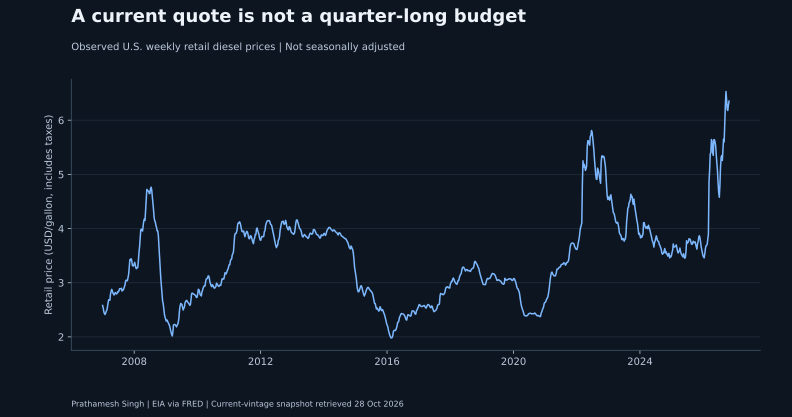
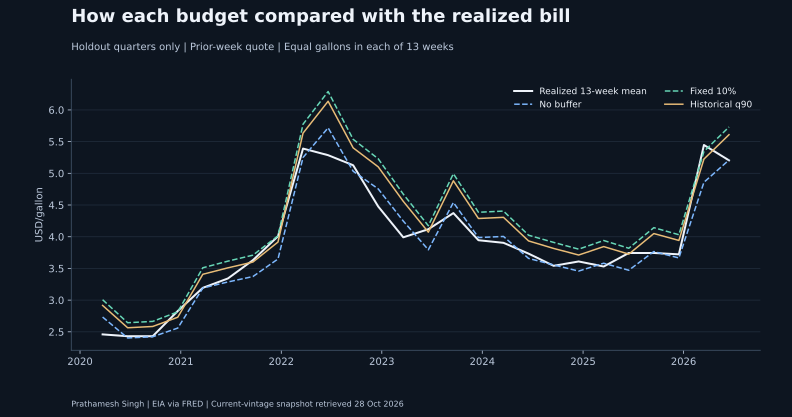
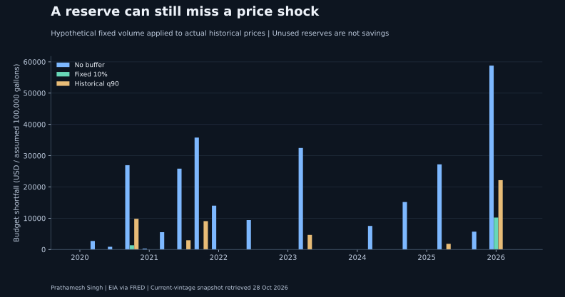

How much diesel-price risk should a budget carry?
The historical q90 rule covered 20 of 26 completed holdout quarters (76.9%), compared with 92.3% for a fixed 10% buffer. Its average reserve was 7.2% of the prior-week quote. The worst shortfall was $22,176 at an assumed 100,000 gallons.
The decision
How much cash should an operations team reserve for thirteen weeks of diesel purchases? Compare a flat quote, a fixed 10% buffer and a reserve calibrated from completed historical quarters.
The result
The historical q90 rule covered 20 of 26 completed holdout quarters (76.9%), compared with 92.3% for a fixed 10% buffer. Its average reserve was 7.2% of the prior-week quote. The worst shortfall was $22,176 at an assumed 100,000 gallons.
A q90 label is a calibration target, not a coverage guarantee. Reserves tie up budget capacity. An unused reserve is not an economic saving.


Budget adequacy and the price of conservatism
All dollar columns assume 100,000 gallons per quarter, evenly distributed across thirteen weeks. Shortfall and unused reserve measure budget adequacy, not operating profit.
| rule | quarters | covered | coverage_pct | mean_buffer_pct | Mean shortfall ($) | Worst shortfall ($) | Mean unused reserve ($) | mean_pinball_usd_per_gallon |
|---|---|---|---|---|---|---|---|---|
| No buffer | 26 | 11 | 42.308 | 0.000 | 10,318.343 | 58,792.308 | 6,319.527 | 0.099 |
| Fixed 10% | 26 | 24 | 92.308 | 10.000 | 444.556 | 10,202.308 | 34,971.124 | 0.039 |
| Historical q90 | 26 | 20 | 76.923 | 7.235 | 1,942.024 | 22,175.676 | 26,008.497 | 0.043 |

Validation before holdout
Candidate histories were the most recent 20 completed quarters, 40 completed quarters and all completed quarters. The 2016 to 2019 validation period selected the lowest mean 90th-quantile pinball loss in dollars per gallon. Ties use candidate order. The selected window was all. The window and quantile were frozen for 2020 onward; newly completed history could update the reserve at later origins.
| window | validation_blocks | mean_pinball_usd_per_gallon | coverage_pct | mean_buffer_pct |
|---|---|---|---|---|
| 20 | 16 | 0.022 | 87.500 | 6.106 |
| 40 | 16 | 0.017 | 87.500 | 6.930 |
| all | 16 | 0.016 | 87.500 | 6.842 |
Timing and method
Blocks begin on the second Monday in the snapshot and advance thirteen weeks. Each budget uses the preceding Monday quote, allowing time for publication. Training targets must end at least seven days before the decision origin. At least twenty completed blocks are required. The historical rule is the higher empirical 90th quantile of realized quarter mean divided by its prior-week quote, floored at one. Only complete thirteen-week outcomes are scored. SQL independently recalculates all realized quarter means and budget shortfalls.
Use the scenario tool
The fuel budget workbench makes volume, price and reserve assumptions explicit. It does not predict future prices. Current window and quantile sensitivity shows how the chosen reserve depends on those choices; this table is not used to retune holdout results.
Limitations
National retail pump prices include taxes; they are not fleet contract invoices, local route costs or wholesale hedging prices. Equal gallons across weeks and 100,000 gallons per quarter are illustrative. The current revised export is not an archived real-time vintage. A one-week quote lag guards publication timing, but does not eliminate revision risk. Non-overlapping quarters avoid shared outcomes but can remain serially dependent. Coverage is historical frequency, not a guaranteed future probability. No actual company savings or hedge performance is claimed.
Inspect the evidence
Weekly observations · Quarter construction · Every evaluated budget · Holdout metrics · Window selection · SQL reconciliation · Summary
Sources: EIA diesel series via FRED, EIA survey methodology, EIA historical series. These prices are retail cash self-serve observations including taxes. Older history includes the transition from low-sulfur to ultra-low-sulfur diesel; the series is not a uniform fuel specification across all years.